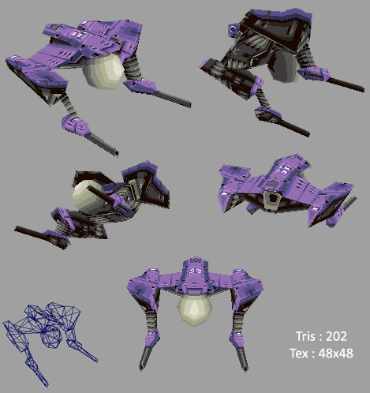
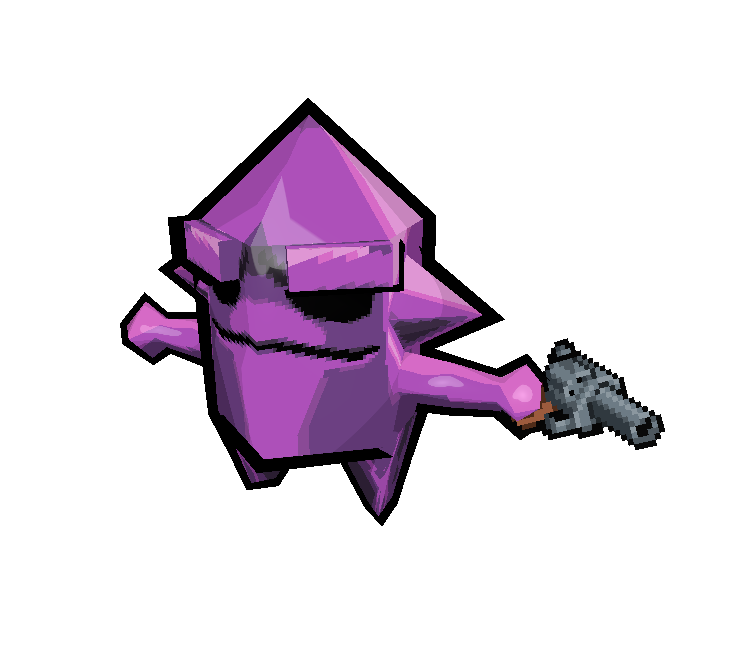
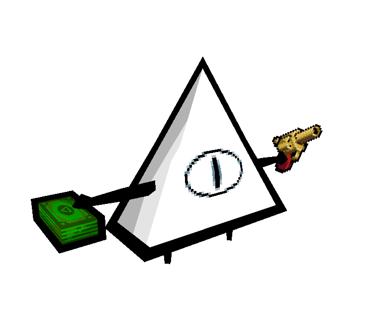
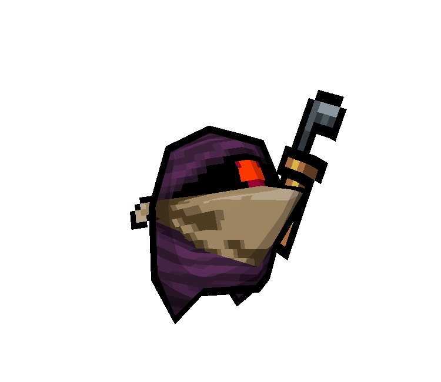
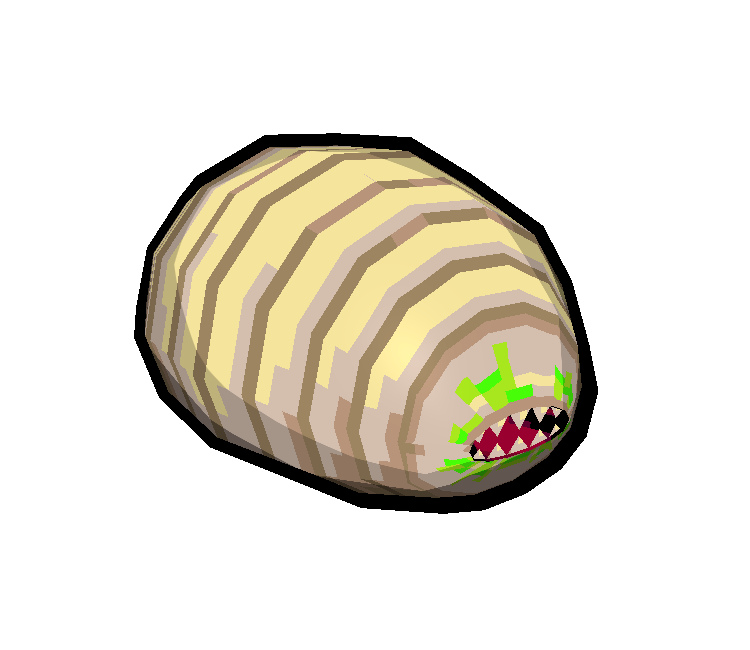
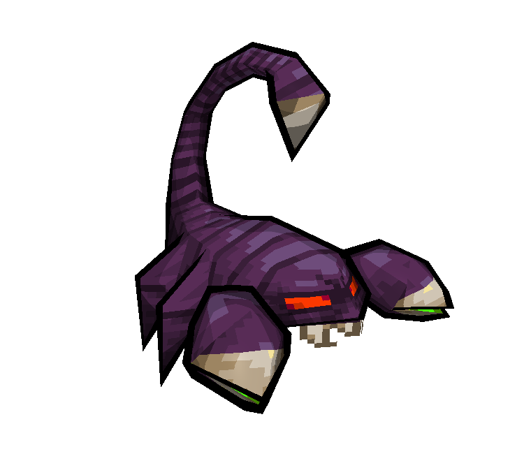
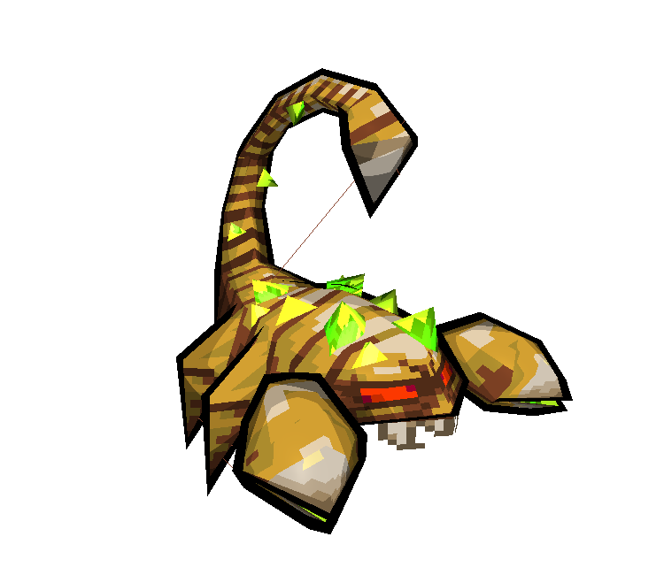
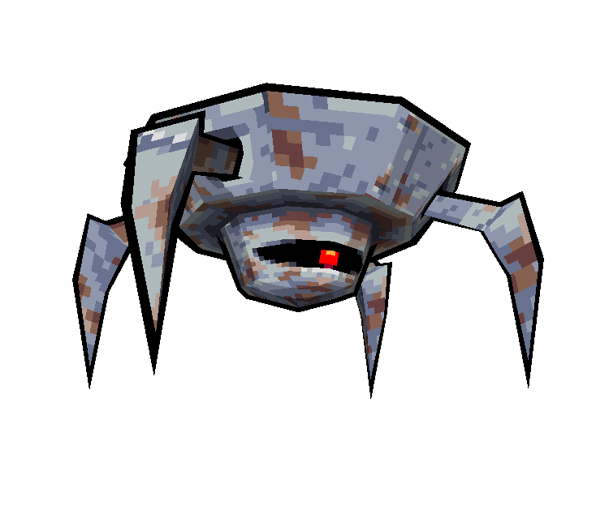
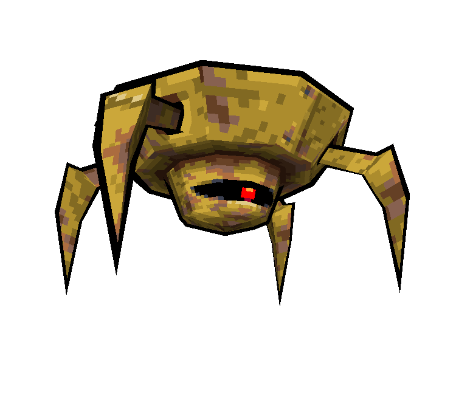
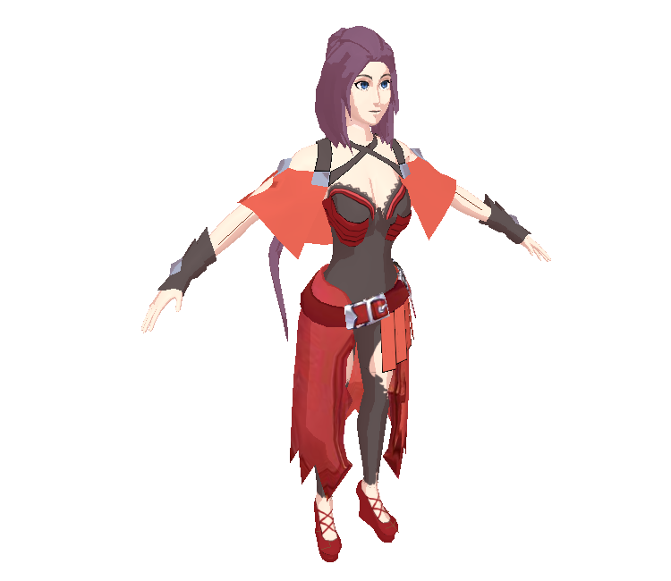

3D Models
Here are some of the 3D models I have made over the years.
Lowpoly Models

This model was made with heavy inspiration from Kenneth Fejer’s lowpoly modeling style. The design of this spaceship is a throwback to Faye Valentine’s gunship from the popular anime Cowboy Bebop.
Crocotile3D

This model was made with an interesting program called Crocotile3D, which is a 3D modeling program, with a special tile-based workflow, thought out for lowpoly-pixelart-style games. The textures are these very cool Gameboy Color style sprites of Dark Souls made by Ryumaru, over at the Pixelation forums.
Nuclear Throne
This set of models was a for-fun project of mine to remake the popular roguelike indie game Nuclear Throne, with lowpoly 3D assets rather than 2D sprites.
       
Mid/Highpoly Models
This is the character Tang Rou, from The King’s Avatar (a.k.a. 全职高手 or Quán zhí Gāo shǒu). This was made to participate in a game project, where the objective was to re-create the MMO game Glory, which is the central focus of this story. The game was being built using Unreal Engine - though as you can imagine, the scope of a game like Glory is probably much too large for a fan labor of love. Unfortunately, it seems that the project has been abandoned… The extent of my participation was really just to make this model:
